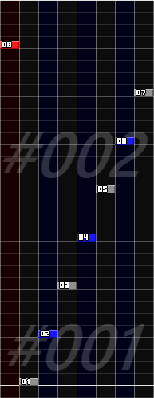
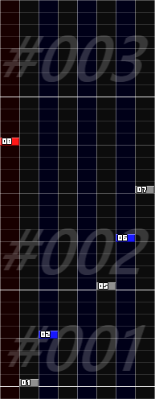
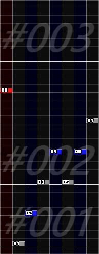
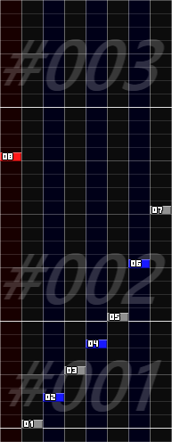
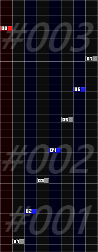

小節長の編集
小節長を変更する際に表示されるウィンドウです。
説明
要素をクリックすると説明が表示されます。-
対象の小節が複数ある場合、「相対値」のチェック状態によって挙動が変わります。
-
具体例
- 小節#001の元々の長さは1
- 小節#002の元々の長さは2
- 「小節長」の指定は2
-
「相対値」をチェックしなかった場合
- 対象の全ての小節の長さが一律で2になります。
- この場合、元々の長さが2である小節#002は変更されません。
-
「相対値」をチェックした場合
- 対象の小節の長さが、元々の長さの2倍になります。
- 小節#001の長さは2になります。
- 小節#002の長さは4になります。
-
具体例
-
「テンポ反映」をチェックした場合、長さが変更される各小節について、以下のような処理が行われます。
- 頭(小節内位置0)にテンポノート(ch:08)が存在しない場合、その時点のBPMに等しいテンポノートが挿入される。
-
その小節内にある全てのテンポノートとストップノート(ch:09)の値が、その小節長の変化率に合わせて変更される。
- テンポノートについては、変更後の値がその時点の実際のBPMに等しい場合は削除されます。
- ストップノートについては、変更後の値が1/192の倍数でない場合多くのBMSプレイヤーで正しい停止時間にならないため、「テンポ反映」による伸縮は非推奨です。
- スクロールノート(ch:SC)及びスピードノート(ch:SP)は変更されません。
- 次の小節の頭にテンポノートが存在しない場合、その時点の本来のBPMに等しいテンポノートが挿入される。
「後処理」の具体例
小節#001の長さを1から1/2に変更する場合の、各処理の結果です。
変更前
トリム
重ねる
伸縮
スライド





#001の2/4以降にあった
ノーツが削除された
#001の2/4以降にあった
ノーツが#002へ移動した
#001にあったノーツが
小節長に合わせて移動した
#001:2/4以降にあった
ノーツが全て移動した
見た目上は移動していない